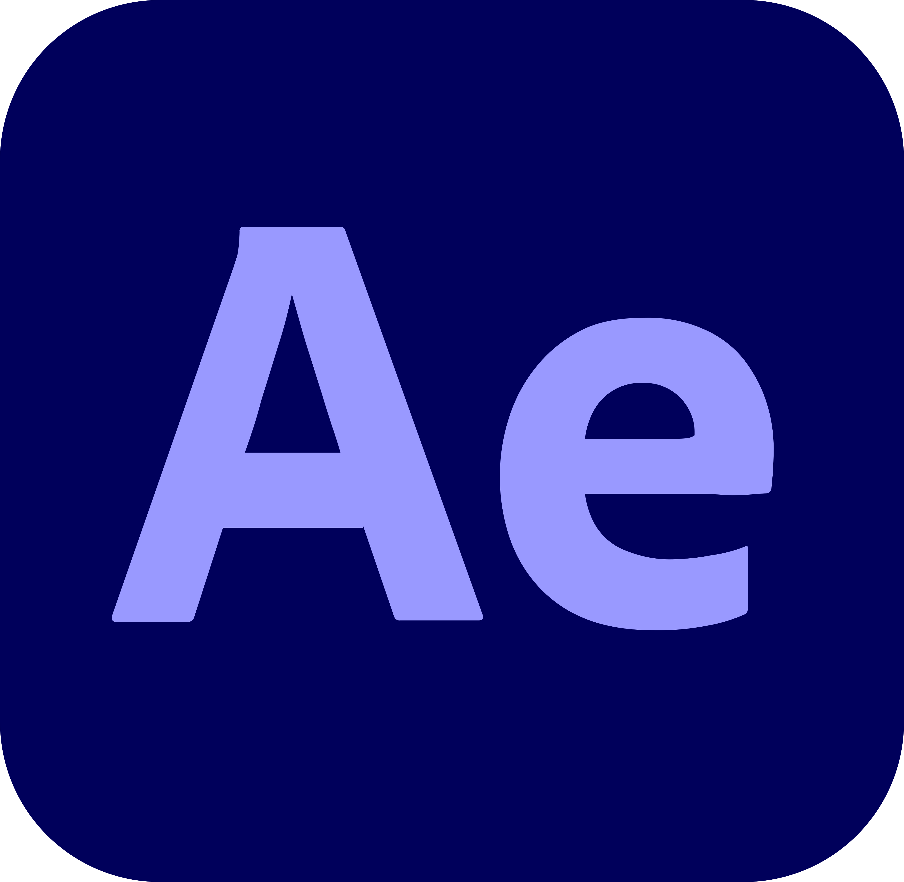

ALDEAS INFANTILES SOS
A continuación encontrarás una selección de los proyectos de diseño gráfico que he desarrollado para Aldeas Infantiles SOS.
Estos trabajos abarcan campañas dirigidas tanto al área de socios como al área de empresas, adaptando cada diseño a las necesidades y objetivos de comunicación de cada proyecto.
RETO SOLIDARIO INTEREMPRESAS
Para este proyecto se desarrolló un vídeo promocional con el objetivo de dar visibilidad al Reto Solidario Interempresas 2026 de Aldeas Infantiles SOS. La pieza combina animación, fotografía, identidad corporativa y recursos audiovisuales para transmitir de forma dinámica el propósito de la campaña e incentivar la participación de empresas colaboradoras. El vídeo fue editado respetando la línea gráfica de la empresa y adaptandolo para su publicación en Youtube
Edición de vídeo · Identidad visual · Campaña digital · Adobe Premier

INFORME ALIANZAS 2025
Este proyecto consistió en la edición de un vídeo de presentación para el Informe Alianzas 2025, con el propósito de comunicar de manera visual el impacto generado por las empresas colaboradoras de Aldeas Infantiles SOS. Se trabajó la narrativa audiovisual mediante la combinación de imágenes, transiciones, tipografía y elementos gráficos de la identidad corporativa para crear una pieza clara, cercana y atractiva destinada a medios digitales.
Edición de vídeo · Comunicación · Identidad visual · Adobe Premiere
TALLER DE EMPLEABILIDAD CON QTS
Para este proyecto se realizó la edición de un vídeo destinado a dar visibilidad al Taller de Empleabilidad desarrollado por Aldeas Infantiles SOS en colaboración con QTS. El vídeo combina entrevistas, imágenes de apoyo, recursos gráficos y animaciones para comunicar de forma clara el objetivo de la iniciativa y acercar la experiencia de los participantes. El montaje se llevó a cabo respetando la identidad visual de la empresa y adaptando el contenido para su publicación en medios digitales.
Edición de vídeo · Motion Graphics · Comunicación audiovisual · Identidad visual · Adobe After Effects · Adobe Premiere

VOLKSWAGEN GROUP ESPAÑA
Para este proyecto se realizó la edición de un vídeo corporativo que muestra la colaboración entre Volkswagen Group España Distribución y Aldeas Infantiles SOS. La pieza combina entrevistas, imágenes de apoyo y recursos gráficos para transmitir el compromiso social de la empresa y el impacto de su colaboración. El montaje se desarrolló siguiendo la identidad visual de Aldeas Infantiles SOS y se optimizó para su publiación en plataformas digitales.
Edición de vídeo · Comunicación audiovisual · Identidad visual · Campaña digital · Adobe Premiere
INFORME ALIANZAS 2024
Este proyecto consistió en la edición de un vídeo de presentación para el Informe Alianzas 2024, con el objetivo de mostrar de forma visual el trabajo realizado junto a las empresas colaboradoras y el impacto generado durante el año. Para ello se combinaron imágenes, grafismos, transiciones y recursos audiovisuales, manteniendo la identidad visual de Aldeas Infantiles SOS y creando una pieza clara, dinámica y adaptada a medios digitales.
Edición de vídeo · Comunicación · Identidad visual · Adobe Premiere